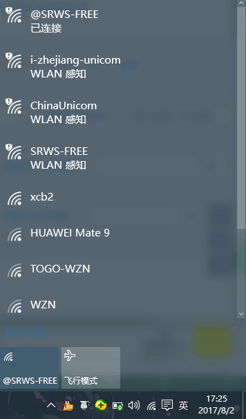
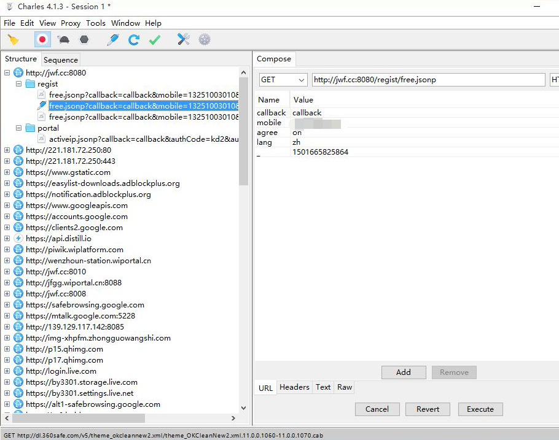
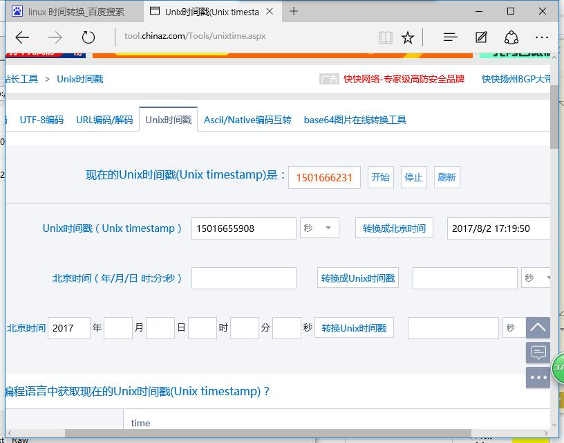
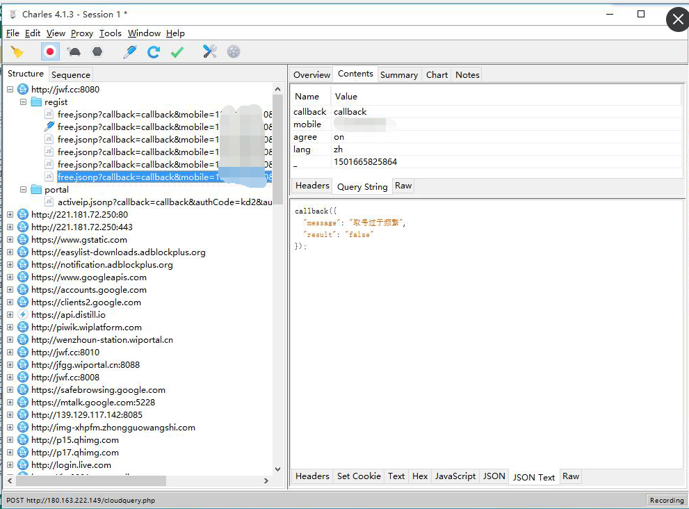
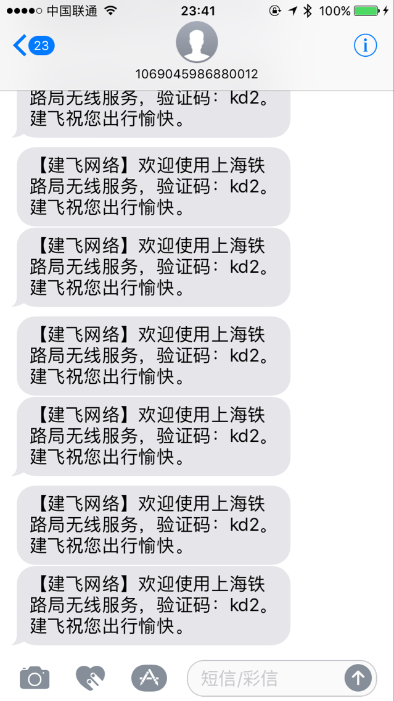
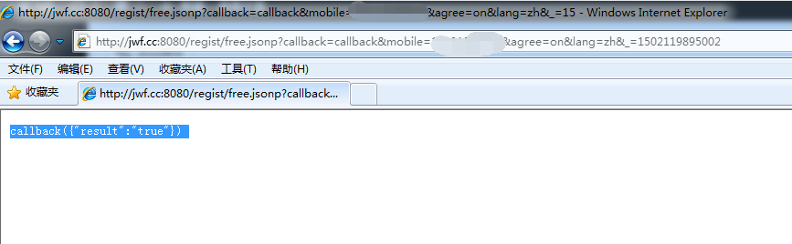

短信轰炸机原理的研究
前几天从温州坐动车回杭州，在候车时，连接上了一个名为@SRWS-FREE的WIFI（应该是上海铁路局为乘客提供的免费WIFI）

连上WIFI后有一个获取验证码的过程。上一篇我的文章里面介绍了Charles的配置教程，于是我打开了这个软件，并进行了抓包操作。不出意料，数据包是明文的，内容是http://jwf.cc:8080/regist/free.jsonp?callback=callback&mobile=PHONE NUMBER&agree=on&lang=zh&_=1501665590864

这个链接中包含了callback moblie agree lang - 这五个参数，其中callback的Value为callback，moblie为手机号，agree应该是用来控制获取验证码频率的，lang为验证码信息的语言，-这个参数的一串数字很奇怪，由于专业敏感，立刻与linux时间戳进行了对比，发现-的参数去掉后面三位即为当前的linux时间戳，因此我猜测后面三位应该是校验码。

了解了参数的作用后，我预判了一个时间戳，并利用Charles的Compose的功能进行了数据包的再次提交，几秒过后手机收到了验证码。再次进行实验，发现后台对linux时间戳并没有验证功能，无需修改时间戳，直接提交即可。但是服务器后端设置了获取间隔，频繁提交请求会提示取号过于频繁。

看来服务器后端设置了60s的提交间隔限制。设置60秒一次的repeat，效果如下。

这篇文章大部分在动车上面写的，保存了草稿，今天想起来完善了一下。但是今天再次测试发现手机收不到验证码了。使用了目前的linux时间戳和随机后三位也不行。

估计有2种可能。1.服务器后端对IP做了限制 2.每天有固定的后三位校验码。 网络上很多的短信轰炸机都是利用了类似的接口，进行短信轰炸。
防范方法
如果你是个人的话，认命吧。 如果你是网站维护人员，我建议从以下几点设置。 1.参数里面加入验证码 滑动解锁等方式进行人机验证。 2.对同一个手机号的每天发送次数作限制。如5次。 3.对IP进行限制，同一IP发送5次验证码。